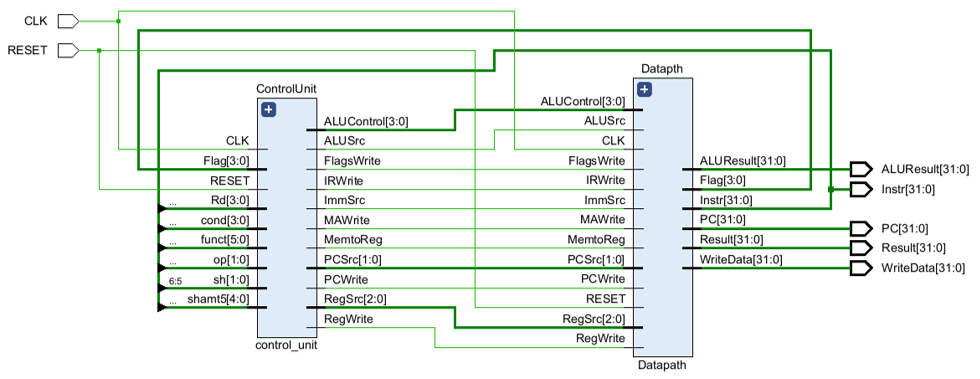

{kind=link}

ARM Multicycle Processor
Overview
This repository contains a VHDL implementation of a multicycle processor that executes a subset of the ARM instruction set architecture. The design targets the Xilinx Zynq 7000 (xc7z020clg484-1) FPGA and was developed using the Vivado IDE.
The processor executes each instruction over 3–5 clock cycles using a finite-state machine controller. It supports data processing, memory access, and branch instructions, with conditional execution based on status flags.
Features
- Multicycle microarchitecture: fetch, decode/read, execute, memory access, and write-back stages.
- Data processing instructions: ADD, SUB, AND, OR, XOR, CMP, MOV, MVN, NOP.
- Shift operations: LSL, LSR, ASR, ROR.
- Memory access: LDR, STR.
- Branch instructions: B, BL.
- Conditional execution using the ARM cond field.
- Status register flags N, Z, C, V are updated only when required.
- Modular design with datapath, register file, ALU, decoder, conditional logic, and FSM.
Conditional Execution Table
| Condition | Mnemonic | Description | Flags |
|---|---|---|---|
| 0000 | EQ | Equal | $Z$ |
| 0001 | NE | Not equal | $\overline{Z}$ |
| 0010 | CS / HS | Carry set / unsigned higher or same | $C$ |
| 0011 | CC / LO | Carry clear / unsigned lower | $\overline{C}$ |
| 0100 | MI | Minus / negative | $N$ |
| 0101 | PL | Plus / positive or zero | $\overline{N}$ |
| 0110 | VS | Overflow / overflow set | $V$ |
| 0111 | VC | No overflow / overflow clear | $\overline{V}$ |
| 1000 | HI | Unsigned higher | $\overline{Z}\;C$ |
| 1001 | LS | Unsigned lower or same | $Z + \overline{C}$ |
| 1010 | GE | Signed greater or equal | $\overline{(N \oplus V)}$ |
| 1011 | LT | Signed less | $N \oplus V$ |
| 1100 | GT | Signed greater | $\overline{Z}\;\overline{(N \oplus V)}$ |
| 1101 | LE | Signed less or equal | $Z + (N \oplus V)$ |
| 1110 | AL / none | Always / unconditional | $1$ |
| 1111 | none | For unconditional instructions | $1$ |
Architecture Overview
The processor has two main components: the datapath and the control unit. The datapath performs all data operations, while the control unit orchestrates execution through the FSM.
{kind=link}
Key components include the program counter, instruction memory, instruction register, register file, ALU, extender, data memory, and multiplexers driven by the control unit.
Control Unit
The control unit includes the instruction decoder, conditional logic, and a finite-state machine that sequences through 14 states to generate control signals.
{kind=link}
Finite State Machine (FSM)
The processor FSM controls every instruction through a 3–5 cycle sequence using signals such as IRWrite, RegWrite, MAWrite, MemWrite, FlagsWrite, PCSrc, and PCWrite.
Fetch, decode, execute, memory access, and write-back all occur under FSM control, with specific state sequences for branch, load, store, and conditional instructions.
{kind=link}
Implementation
- Language: VHDL
- Tool: Xilinx Vivado IDE
- Target FPGA: Zynq 7000 ZC702 (xc7z020clg484-1)
- Maximum clock frequency: 117.6 MHz
- Resource usage: 805 LUTs, 251 FFs, 1 RAMB18E1, RAMS32/RAMD32, CARRY4 units
- Power: 0.189 W (56% static, 44% dynamic)
Verification
- Register file testbench: checks writes/reads, R15 behaviour, RegWrite handling.
- ALU testbench: exercises ADD, SUB, AND, XOR, LSL, ASR, MOV, MVN and coverage of overflow/carry/flags.
- Control unit testbench: validates control signal generation for representative instructions.
- Processor testbench: runs a full ARM assembly program and compares register/memory state after each instruction.
Example Assembly Program
; Initialize registers
MOV R0, #5
MOV R1, #3
MOV R2, #0x0F0F0F0F
MOV R3, #0xFF00FF00
; Data processing
ADD R4, R0, R1 ; R4 = 8
SUB R5, R0, R1 ; R5 = 2
AND R6, R2, R3 ; R6 = 0x0F000F00
OR R7, R2, R3 ; R7 = 0xFF0FFF0F
XOR R8, R2, R3 ; R8 = 0xF00FF00F
CMP R0, R1 ; sets flags (Z=0, C=1, N=0, V=0)
MOV R9, #0x7FFFFFFF ; maximum positive
ADD R10, R9, #1 ; overflow: R10 = 0x80000000, V=1
; Shifts / rotates
LSL R11, R0, #1 ; R11 = 10
LSR R12, R11, #2 ; R12 = 2
ASR R13, R10, #1 ; R13 = 0xC0000000 (N=1)
ROR R14, R0, #1 ; R14 = 0x80000002 (rotate right by 1)
; Memory access
STR R4, [R0, #0] ; store 8 at address 5
LDR R5, [R0, #0] ; load back to R5
; Branch (unconditional)
B label
MOV R6, #0 ; skipped
label:
ADD R7, R0, #1 ; executed after branch
; Branch with link (subroutine call)
BL subroutine
MOV R8, #0 ; return address → R14How to Use
- Open the project in Xilinx Vivado.
- Simulate any testbench such as tb_processor.vhd.
- Synthesise the top-level entity Processor.
- Implement and generate the bitstream for the ZC702 board or a compatible Zynq device.
- Modify the ROM initialization to run a custom program.
Results Summary
| Parameter | Value |
|---|---|
| Max clock frequency | 117.647 MHz |
| Worst setup slack | 0.000 ns (met) |
| Worst hold slack | 0.249 ns (met) |
| LUTs | 805 |
| Flip‑flops | 251 |
| Power | 0.189 W |
| Supported instructions | 21 + condition variants |